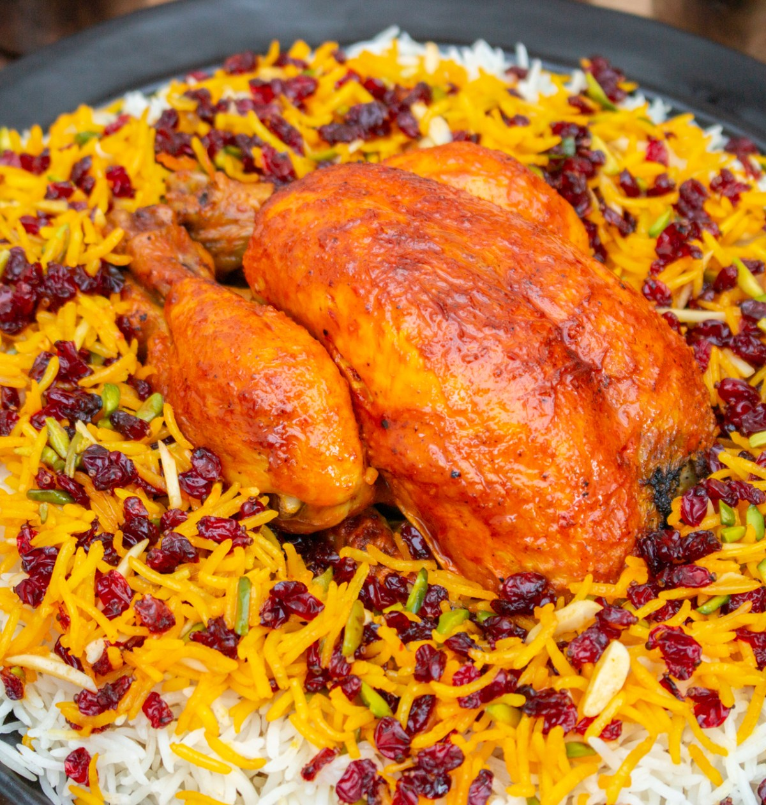

Zereshk Polo

Description
A fun dish with chicken.
Ingredients
- Saffron
- Two cups of Basmati Rice.
- One cup of dried barberries (zereshk.)
- Vegetable Oil
- Salt
- Boneless Chicken Thigh
- Tomato puree.
- Tumeric.
- Black pepper.
- One onion.
Steps
- Grind the saffron threads using pestle and mortar. Alternatively you can use the bottom of a glass and crush the saffron threads on a plate. Transfer the ice cubes into a glass. Sprinkle the ground saffron for the rice over the ice cubes. Set it aside in a warm place. This will allow the melting ice cubes to absorb the maximum amount of colour and flavour of the saffron, giving the rice a bright yellow colour.
- Prepare your rice. See our guide to washing rice on the Homepage.
- Boil the water in a pot, together with 2 tbsp of salt. Then pour in the rice. The temperature of the water will drop. Bring it back to boiling as soon as possible. Let the rice parboil for 4 minutes, then drain it in a colander and rinse it with cool water. This will wash off any excess salt and interrupt the cooking process.
- Put a non-stick pot over medium heat and add 3 tbsp vegetable oil. Swirl the pot to distribute it evenly. Transfer the parboiled rice into the pot in a heap shape and poke three holes in it using the back of a wooden spoon. This helps the rice cook evenly. Don’t add any water. The moisture in the rice corns is enough to steam it, resulting in amazingly fluffy rice.
- Once you see steam rising from the pot cover the lid with a clean kitchen towel, which will absorb the steam. Firmly close the lid, reduce the temperature to low and let the rice steam for 45 minutes without opening the lid.
- Heat a frying pan and add the vegetable oil. Once the oil is hot carefully place the chicken legs or poussin in the pan. Turn them after a few minutes using kitchen tongues and let the other sides brown for a further couple of minutes.
- Peel and quarter the onion. Transfer what is left of the vegetable oil you used to brown the chicken into the pot you want to stew the chicken in. Let it heat up to medium temperature and add the onion quarters to it. Sauté them for a few minutes, then add the tomato paste, turmeric and black pepper. Stir the paste for a few seconds, then add the freshly boiled water. Stir until well combined.
- Add salt to taste, give it a quick stir and place the chicken legs in the sauce, top side down. Bring the mixture to a boil, then reduce the temperature to low/medium and put on the lid. Let the chicken simmer gently while you prepare the rice.
- Turn the chicken legs in the sauce, allowing them to cook evenly.
- Rinse the dried barberries in a sieve and let them drain dry. Heat the remaining vegetable oil in a small pan over low to medium heat. Add the barberries and sugar to it and stir swiftly for about a minute. Remove the pan from the heat. Add the slivered pistachios and almonds to them and set them aside for later.
- Once the rice has steamed transfer half of it into a bowl and add the saffron water that has by now melted. Carefully combine both until the rice is evenly yellow.
- Transfer the other half of the rice to a serving plate.
- Arrange the yellow rice on top of the white rice. Decorate the rice with the caramelised barberries.
Thanks to IGotItFromMyMaman.